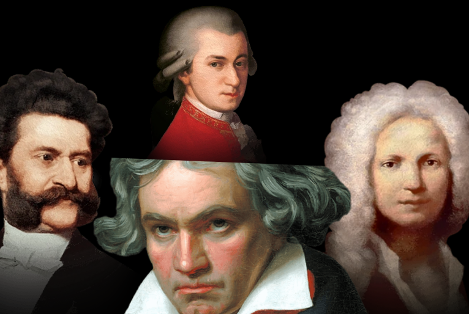

Música de concerto, chamada popularmente de música clássica ou música erudita, é a principal variedade de música produzida ou enraizada nas tradições da música secular e litúrgica
ocidental. Abrange um período amplo que vai aproximadamente do século IX até o presente
De acordo com a Wikipedia (https://pt.wikipedia.org/wiki/M%C3%BAsica_cl%C3%A1ssica)